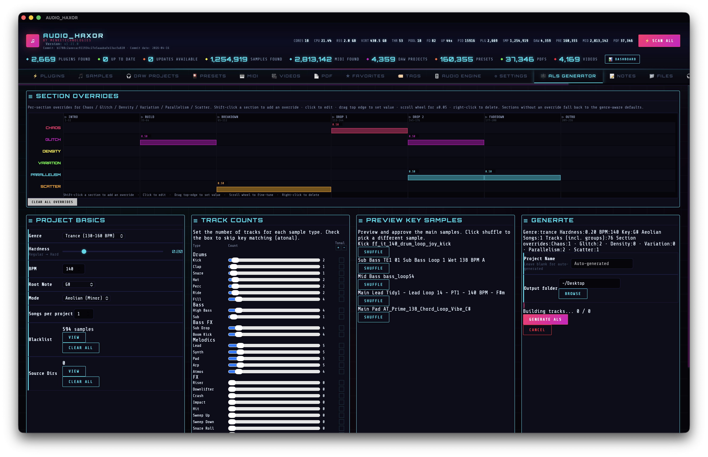

19.ALS generator — arrange a techno project from your sample library
The ALS Generator tab turns your analyzed sample library into a ready-to-play Ableton Live Set (.als). One click produces a 50-track arrangement with grouped busses, return sends, sidechain compression, and a limited master — open it in Ableton 11 / 12 and press play.
Before you generate: prerequisites
The generator selects samples from the SQLite library using BPM and musical-key metadata. Make sure these are populated first:
- Scan samples into the library — Samples tab (step 05) or Cmd+Shift+S.
- Run BPM / key / LUFS analysis — Cmd+Shift+V or the ALS tab’s own Run Analysis button (
#alsAnalysisBtn). The status line (#alsAnalysisStatus) shows analyzed / total / unanalyzed counts. The tab surfaces this because key-matched selection falls back to filename heuristics without it. - (Optional) Curate the pool with the Blacklist / Whitelist modals — paths on the blacklist never get selected; directories on the whitelist scope selection to just those trees.
Open the tab
Click the 🎼 ALS Generator tab at the end of the tab bar, between Audio Engine and Settings (data-tab="alsGenerator" in frontend/index.html). There’s no default keyboard shortcut bound — the command palette (Cmd+K) can jump here too.

Global controls
Top strip of the panel. Every field persists to prefs so you can refine across sessions.
- Genre (
#alsGenre) — Techno, Schranz, or Trance. Genre drives arrangement length (224 / 208 / 256 bars), default BPM/hardness, and the sample-category fallback SQL patterns. - BPM (
#alsBpm) — 120–200. Defaults follow genre (Techno 132, Trance 140, Schranz 155). The tempo is baked into warp markers so loops stretch cleanly. - Hardness (
#alsHardness) — 0.00–1.00. Biases selection toward heavier / softer kicks and leads when the sample library has ahardnessscore. - Key — root note (A–G) plus mode (Ionian / Dorian / Phrygian / Lydian / Mixolydian / Aeolian / Locrian). Samples with matching
key_nameare preferred; mismatched but relative-minor-of-major entries are allowed. - Atonal — global override that ignores key. Useful for noise / industrial / schranz material.
- Songs — 1–10. Each song gets its own bar range (song length + 32-bar gap) and re-rolls sample selection from the pool, so arrangements diverge across the same
.als. - Output path (
#alsOutputPath) — target directory picker; the filename is auto-generated from genre + hardness + key + seed unless you override Project name. - Seed (
#alsSeed,#alsSeedLocked) — optional. See the Seed / reproducibility section below.
Seed / reproducibility
Every random choice the generator makes — which samples win the shuffle-within-score tie-break, where scatter hits land on the 1/16 grid, which positions become fills or glitches, how the chaos gaps carve up a bar, which tracks drop out under parallelism, which 8-bar blocks receive density accents — derives from a single seed. Same seed + same config = bit-identical arrangement.
Controls live at the bottom of the Generate section, next to Project Name and Output folder:
- Seed field (
#alsSeed) — decimal string. Leave blank to let the backend draw a fresh random seed for this generation only. Whatever seed was used is echoed back and populated into the field after the run (look for the “Seed: 12345” line in the result card), so you can see exactly what produced the output you just got. - 🎲 Randomize (
[data-action="alsRandomizeSeed"]) — drops a fresh random 53-bit seed into the field. Chose 53 bits deliberately: it’sNumber.MAX_SAFE_INTEGER, so any seed that ever shows in the wizard round-trips losslessly through JS — copy one out of the result card, paste it back in later, and you get the same project. - 🔒 Lock (
#alsSeedLocked) — when ticked, the current seed is preserved across app restarts viaprefs.alsGeneratorPrefs. When unticked,restoreAlsPrefsdrops the stored seed on startup so the next generation rolls fresh — this is the guard against “why does every generation sound identical now?” after you leave the app running with a seed in the box.
Typical workflow:
- Leave the field blank. Press Generate. Listen to the result.
- You like it. Tick 🔒 Lock. The seed that made it is already in the field (populated from the result card). Next Generate produces the same arrangement — tweak only the parameters you want to explore (e.g. raise hardness, or swap Techno to Schranz) and regenerate.
- You want to try something new. Hit 🎲 (or clear the field) and Generate again.
Implementation notes
- Wizard sends
seedas a string so u64 seeds up tou64::MAX(say, pasted from a blog post that uses a 64-bit hash) round-trip without JS Number precision loss. The Rust side accepts either numeric or string form viadeserialize_seedinsrc-tauri/src/als_project.rs; empty or whitespace-only strings map toNone, whereas non-numeric strings surface as hard errors rather than silently being dropped. generate_als_projectinsrc-tauri/src/lib.rsresolves the concrete seed viaconfig.seed.unwrap_or_else(rand::random). The same seed feeds both the generator andgenerate_project_name(config, seed), so the word-pattern portion of the filename is also deterministic; theYYYYMMDD_HHMMSSsuffix keeps two locked-seed runs from overwriting each other on disk.- Seed threading uses a thread-local
StdRnginsrc-tauri/src/techno_generator.rs.init_gen_rng(seed)runs at the top ofgenerate()andclear_gen_rng()runs on every exit path (success and error alike, via agenerate_inner()split). All 10 randomness sites in the file —generate_swoosh_arrangements,generate_scatter_hits,generate_random_fills,generate_glitch_arrangements,apply_parallelism,apply_variation,apply_chaos_to_arrangements,apply_density_per_section,apply_glitch_edits, and the sample-shuffle tie-break inquery_samples_internal— pull viawith_gen_rng(|rng| …). When no generation is active,with_gen_rngseeds a freshStdRngfrom wall-clock nanoseconds so unit tests that call helpers directly still produce output. - Rust tests:
test_generate_project_name_deterministic_with_seedandtest_generate_project_name_varies_with_seedinals_project.rs;test_seeded_helper_is_deterministic,test_different_seeds_produce_different_output, andtest_helper_works_without_generate_initintechno_generator.rs’sadditional_testsmodule.
Per-type track counts
A grid of 27 sliders (0–50 each) — one per track type: KICK, CLAP, SNARE, HAT, PERC, RIDE, FILL, BASS, SUB, LEAD, SYNTH, PAD, ARP, RISER, DOWNLIFTER, CRASH, IMPACT, HIT, SWEEP UP, SWEEP DOWN, SNARE ROLL, REVERSE, SUB DROP, BOOM KICK, ATMOS, GLITCH, SCATTER, VOX.
Set a slider to 3 and you get KICK 1, KICK 2, KICK 3 — three parallel tracks with different samples and gradually-layered entry/exit points (Layer 1 plays the full arrangement, Layer 2 trims one section from each end, and so on). Set a slider to 0 and the type is omitted; group buses are only emitted when they have at least one child.
Adjacent to each slider is a tonal toggle — when on, that type must respect the project key (no atonal samples allowed), even if the global Atonal flag is off. Useful when you want atonal percs but tonal basses.
Section timeline (chaos / glitch / density / variation / parallelism / scatter)
frontend/js/als-timeline.js draws a 6-lane canvas below the sliders. Each lane represents one dynamics parameter. The lanes are subdivided into 8-bar blocks — one cell per Ableton phrase — so you can shape dynamics at phrase granularity, not just per 32-bar section. Section names and their bar ranges remain as visual labels at the top, with heavier vertical dividers where each section begins.
Block count per genre (every genre lays its sections on an 8-bar grid, using the genre’s default section lengths — users can override these):
- Techno — 28 blocks across 224 bars (7 sections × 4 blocks).
- Trance — 32 blocks across 256 bars (48-bar breakdown and outro get 6 blocks each).
- Schranz — 26 blocks across 208 bars (16-bar breakdown and outro get 2 blocks each).
Resizing sections (per-genre)
Section bar lengths are editable. Every section has a draggable handle on its right edge — two short cyan tick marks inside the header row. Hover the edge: cursor becomes col‑resize. Click and drag:
- Dragging adjusts the preceding section’s length, pushing or pulling every later section along with it.
- Drag snaps to the 8-bar grid. Minimum section length is 8 bars (1 block). Maximum is 128 bars (16 blocks).
- A cyan ghost line follows the cursor while you drag; the bar-count label (e.g. “BREAKDOWN: 40 bars”) updates live. Nothing commits until you release the mouse — on release the canvas reflows once to the new layout and the value is saved.
- Pixel→bar mapping is frozen at mousedown so drag feels linear (the grid doesn’t auto-resize under your cursor). Cursor movement always produces proportional bar movement for the whole gesture.
Lengths are persisted per genre in prefs under alsSectionLengthsByGenre. Switching the Genre dropdown loads that genre’s stored lengths (or its defaults if you haven’t touched it yet). The IPC payload to the Rust generator includes your current lengths, so generated .als files use your section sizes — setting trance outro to 32 means Ableton opens a 32-bar outro, not 48.
Arrangement patterns are remapped at generation time from the canonical 224-bar Techno reference layout onto your chosen layout (see techno_generator::remap_bar_range). Shrinking a section clips the tail of the template pattern to fit; extending produces a silent tail beyond the canonical template length — the template was written for 32-bar sections, so blocks past bar 32 of any section have no generator content until the arrangement engine gets the full phrase-pattern rewrite.
Heads-up: if you shift an earlier section’s length, later sections slide along absolute bar positions, and any chaos/glitch/etc. overrides you’ve pinned in the shifted range will fall in unexpected places. The overrides themselves stay put (they’re keyed by absolute bar, not section-relative). Right-click to clear + re-pin if anything ends up where you didn’t intend.
Interactions on any 8-bar block (FL Studio-style paint + erase):
- Left-click and drag (primary gesture) paints every block the cursor crosses in any lane. The paint value is captured from the starting block: clicking an empty block paints
0.5; clicking a pinned block paints that block’s value across the whole gesture — perfect for extending a region to its neighbors or stamping the same value down a diagonal. Cursor becomes a cyan paintbrush over the grid. - Left-click without dragging still acts like a single click: pins (or re-uses)
0.5and opens the popover slider for fine-tuning. - Right-click and drag erases in any lane. A single right-click clears one block; dragging with the right button held clears every block the cursor crosses — sweeping a diagonal wipes a rectangular region in one gesture. Cursor becomes a pink eraser during the drag. The native context menu is suppressed.
- Drag the top edge (top 6 px) of a pinned block to set the value by height (top = 1.0, bottom = 0.0). Top-edge drag takes priority over paint so fine-tuning one block never accidentally paints neighbors.
- Shift-click range-selects every 8-bar block between the current anchor and the clicked block, same lane (classic Finder/spreadsheet convention). After selecting, the popover slider adjusts every selected block at once — drag once, all of them get the same value. The anchor (last-clicked, cyan glow) is the reference block for the popover’s default value; other selected blocks get the same cyan outline without the glow. Shift-click in a different lane degrades to a fresh single-select (so you can start a new anchor there). Shift-click is pure selection — it doesn’t pin any values; only dragging the popover slider pins them.
- ⌘/Ctrl-click (Cmd on Mac, Ctrl elsewhere) fills a linear ramp from the current anchor to the clicked block, same lane only. Start value = anchor’s current value (or 0.5 if unpinned); end value = click Y-height in the clicked block’s lane (top = 1.0, bottom = 0.0). Every 8-bar block between is linearly interpolated, inclusive. Useful for builds: click a 0.2 block, then ⌘-click 32 bars later near the top → a smooth 0.2 → 1.0 build fills the range and every filled block joins the selection so the popover can further tweak the group. While ⌘/Ctrl is held the cursor shows a cyan ramp icon to signal the mode.
- Scroll wheel over a pinned block nudges ±0.05.
- Popover slider lets you type a precise value; the title shows the section name and the block’s bar range (e.g. CHAOS · BUILD · bars 33–40).
- Clear All wipes every block override (alsSectionOverrides pref).
Persistence uses a flat bar-start → value map: { chaos: {"1": 0.5, "9": 0.3, "65": 0.8}, glitch: {…}, … }. The Rust side (als_project::SectionValues) deserializes the same shape via a BTreeMap<String, f32> with #[serde(transparent)]. Legacy prefs keyed by section names (e.g. {"intro": 0.5}) migrate on first load by fanning the value out to every 8-bar block inside that section for the current genre.
The six parameters drive arrangement behavior at block resolution: higher chaos picks more varied samples, higher density adds micro-accent clips on HAT / PERC / SYNTH / ARP / PAD tracks, parallelism widens polyphony, variation forces fresh samples on repeats, scatter randomizes one-shot hit positions, glitch triggers mini-edits. Density is the most per-block-sensitive: its resolver walks all 28+ blocks and rolls a probability per block from that block's value.
Preview pane
Below the timeline, #alsPreviewList shows up to five representative sample paths — kick, sub, mid bass, lead, pad — that match the current config. This is a dry-run: it calls als_query_samples without writing anything. Use it to sanity-check your key / hardness / blacklist setup before committing to a full generate.
The summary line (#alsSummary) estimates total tracks and clip count from the active slider config.
Generating
Press Generate (#alsGenerateBtn). The button is replaced by a spinner + progress bar. Progress events from the Rust backend stream over the Tauri event channel:
- Loading samples for song 1/N… — SQL queries against the sample pool.
- TRACK_PROGRESS:created:total — each track clone drives the bar.
- Assembling XML — track strings joined, master chain injected, NextPointeeId updated, locators stamped at every section boundary.
- Writing <filename> — gzip encoder flushes the final
.als.
The Cancel button (#alsCancelBtn) flips a shared AtomicBool; the generator drops out at the next cancel checkpoint.
What ends up in the file
The generated .als is a gzipped XML document. Decompressed, you’ll see:
- Six group buses — each skipped when empty.
KICKSis its own top-level group (separate fromDRUMS) so the kick pulse can safely feed every sidechain without feedback. ThenDRUMS(claps, snares, hats, percs, rides, fills),BASS(bass + sub),BASS FX(sub drops + boom kicks),MELODICS(leads / synths / pads / arps / atmos),FX(risers / downlifters / crashes / impacts / hits / sweeps / reverses / glitches / scatters / vox). - Per-track sends — every AudioTrack sends to Return A (Reverb) and Return B (Delay) with category-aware amounts: kick / sub / bass stay dry, drums get a light kiss, leads / arps add delay, pads / atmos run wettest. Values come from
send_levels_for()insrc-tauri/src/techno_generator.rs. - Group-level sidechain compression — a
Compressor2is injected into DRUMS / BASS / BASS FX / MELODICS group chains, keyed toAudioIn/Track.<KICKS_group_id>/PostFxOut. Settings: Threshold ≈ −14 dB, Ratio 4:1, Attack ≈ 5 ms, Release ≈ 150 ms. FX bus is intentionally un-ducked so risers / impacts / crashes stay transient. Template:src-tauri/src/group_sidechain_compressor_template.xml. - Master chain —
MainTrackgets an Eq8 (Band.0 as 12 dB/oct HPF at 30 Hz) and a Limiter (Ceiling −0.3 dB, AutoRelease, Lookahead, LinkChannels) injected before the template’s existing Utility. HPF first, Limiter second, Utility third. Templates:src-tauri/src/master_eq8_hpf_template.xml,src-tauri/src/master_limiter_template.xml. - Locators at every section boundary of every song, labeled with the song’s detected key.
- Warp markers on every AudioClip so non-BPM-matching samples stretch to project tempo.
- Track colors per category — DRUMS red-ish, BASS orange, MELODICS cyan-ish, FX purple — so the mixer reads at a glance.
Verifying in Ableton
- Double-click the
.alsin Finder (oropenit from the shell). Ableton 11 / 12 loads. - Confirm the tempo matches what you set — it’s written to both the
Tempo/Manualnode and the first transportFloatEvent. - Scan the Arrangement view — you should see one labeled section locator per section per song.
- Check the mixer: KICKS, DRUMS, BASS, BASS FX, MELODICS, FX group tracks expand into children. Each AudioTrack’s two sends have non-silent values; bass tracks show −∞ dB (dry).
- Open any DRUMS / BASS / MELODICS group and look at its device chain — a Compressor2 with KICKS · Post FX as the sidechain source.
- Select the Main track — Eq8 (Master HPF 30Hz) → Limiter → Utility.
- Hit play. The kick should drive audible ducking on the bass and melodics buses.
Backend entry points (for deeper work)
- IPC:
generate_als_project(config),cancel_als_generation(),als_query_samples(category, config, limit). Alsosample_analysis_start/stop/stats,get_/add_to_/remove_from_/clear_als_blacklist, same family for the whitelist. See the IPC inventory on the docs hub. - Arrangement core:
src-tauri/src/techno_generator.rs. Thegenerate()function runs sample loading → template extraction → group+track creation → post-processing → locators → master-chain injection → tempo set → gzip write. - Config model:
src-tauri/src/als_project.rs—ProjectConfig,SectionOverrides,TrackCounts,TypeAtonal, plus the 7-section arrangement bounds per genre. - Base template:
src-tauri/src/empty_project_template.als.gz— ships with twoReturnTracks (Reverb + Delay) pre-configured and eachAudioTracktemplate already carrying an Eq8 / Gate / Channel EQ / Compressor2 chain (sidechain present but disabled by default). The generator fills in what the template leaves dormant. - Frontend:
frontend/js/als-generator.jsdrives the panel;frontend/js/als-timeline.jsdraws the 6-lane, 8-bar-block override canvas and handles the bar-keyed prefs schema plus legacy section-name migration.
Reference documents
- ALS_GENERATION_GUIDE.md — ID management, device XML, genre patterns, implementation checklist.
- ALS_GENERATION_FINDINGS.md — gotchas from reverse-engineering real projects.
- SAMPLE_CATEGORIZATION.md — filename / path → track-category mapping.
- TECHNO_ARRANGEMENT_RULES.md — section energy flow, entry / exit points.
- CLIP_TIMING_REFERENCE.md — beat / bar math, warp-marker derivation.
- ID_MANAGEMENT.md — ID allocation and
NextPointeeIdbookkeeping.